| SINUMERIK 840D M 面板 |
| 返回<<< |
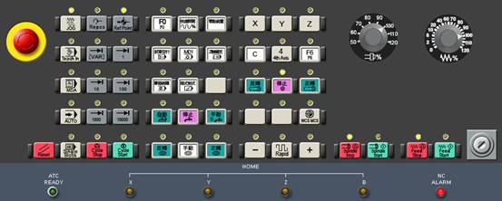 手动 重新定位 回参考点 示教 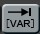 增量 1MDA 10 100 自动 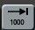 1000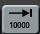 10000复位 单段运行 循环停止 循环启动 F0 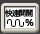 快速开关 零点偏置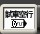 空运行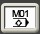 M01有效 Z轴设定跳转 程式制式 切削液启动 切削液停止 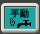 手动切削液反转 手动 正转 X向 Y向 Z向 回转轴 第四轴 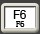 厂家自定义功能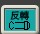 主轴反转 主轴停止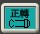 主轴正转负方向移动 快速 正方向移动 主轴停 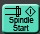 主轴启动 伺服停 伺服启动电源开关 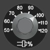 主轴倍率开关进给倍率开关 急停
|